Challenge 1 : BRAND SAFETY
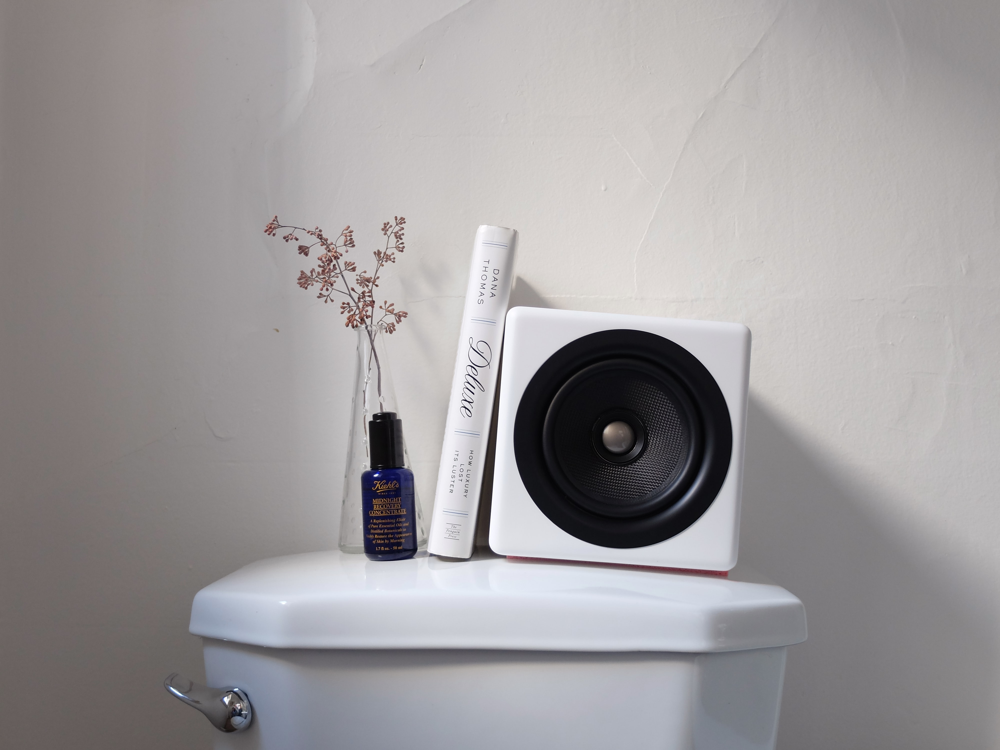
"En 2018, 72% des Directeurs Marketing sont de plus en plus challengés sur leur capacité à protéger l’image et la réputation de leur marque."
- Integral Ad Science
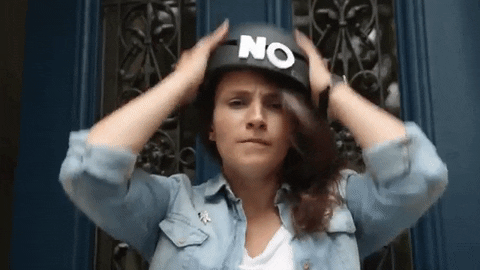
Mais qu'est que ça veut dire la brand safety ?
Dans la publicitié digitale, on parle de brand safety lorsque l'on fait référence à un environnement digital qui soit sain et sécurité pour les marques prendre la parole, avec un contenu adapté à l’image de la marque. En effet, un environnement brand safe participe à véhiculer positivement le message de la marque, peut l'aider dans sa communication.
A l'inverse, un environnement non brand safe peut être très impactant pour une marque qui se retrouve associée à un contenu problématique : une promotion pour un croisière sur un article parlant du Titanic ? Un coupon réduction pour l'achat de nouveaux pneus à côté d'un témoignage d'accient de voiture ? Un tel placement peut être très impactant pour une marque qui ne souhaite aucunement être mise en perspective avec des thèmes chocs ou polémiques.
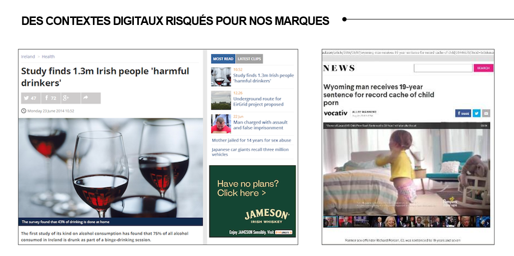
Brand safe ou non brand safe ?
La brand safety n’est pas une nouvelle notion, il s’agit d’une problématique qui revient en permanence sur le devant de la scène. Entre scandales et éclats de rire, nous avons tous en tête des exemples de panneaux d’affichage mal positionnés qui tournent le content en dérision ou déprécient le message initial.
En digital, avec l’achat en programmatique, nous avons ce phénomène qui s’accentue :
Lorsque nous nous cherchons à acheter une cible ou des profils affinitaires, il peut y avoir finalement des associations malvenues.
Effectivement, si nous ne bordons pas notre diffusion, nous pouvons effectivement altérer notre marque, comme lors du récent scandale youtube qui monétisait des chaînes diffusant des vidéos dérivées à des usages pédophiles.
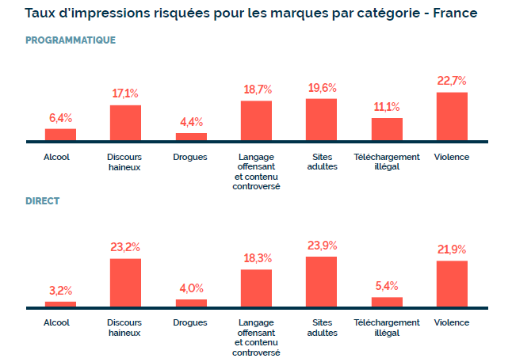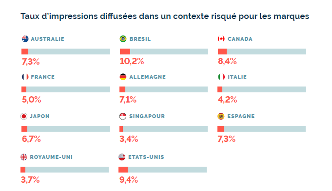
" IAS identifie et mesure la Brand Safety sur la base de
7 grandes catégories de risques pour les marques :
Sites adultes (pornographiques), Alcool, Discours haineux, Téléchargement illégal, Drogues, Langage
offensant et contenu controversé et Violence.
Chaque marque peut ensuite appliquer son propre seuil de risque à chacune des catégories de contenu : faible, modéré, élevé, très élevé.
Selon notre baromètre de la qualité média digitale au 1er semestre 2017,
le niveau de risque pour les marques au niveau mondial s’établit à 6,7%. Si la France se situe en dessous à 5%, la
part d’impressions diffusées dans un contexte risqué pour la marque a cependant augmenté de +47% par rapport au 2ème semestre 2016. En France toujours, les sites adultes, les contenus violents ou au discours haineux sont en tête des risques les plus rencontrés. "
Les problématiques quxquelles les marques font face sont principalement :
- Le contenu risqué : les marques ne souhaitent pas être présentes à côté d’images sexy, de femmes dénudées, etc.
- Le contenu osé : les contenus politiques, les titres incendiaires, les actualités négatives, etc.
- Le contenu illégal : les marques ne veulent pas être affichées à côté d’éléments illégaux comme la violence, les jeux d’argent dans certaines régions, la nudité, etc.
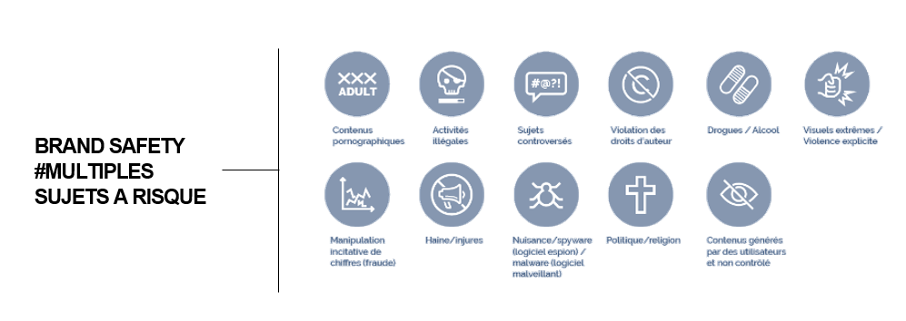
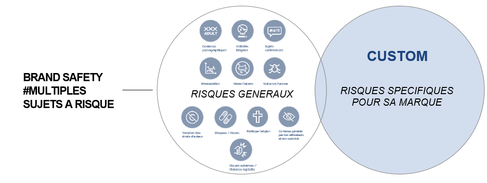
Mais alors comment agir pour sécuriser sa marque ?
Agir sur une diffusion de contenu passe déjà par ajuster ses critères d'achat ! Se poser les bonnes questions !Cela passe par l'appréhension des challenges de la marque qui peuvent lui être propre et par le suivi de votre diffusion.
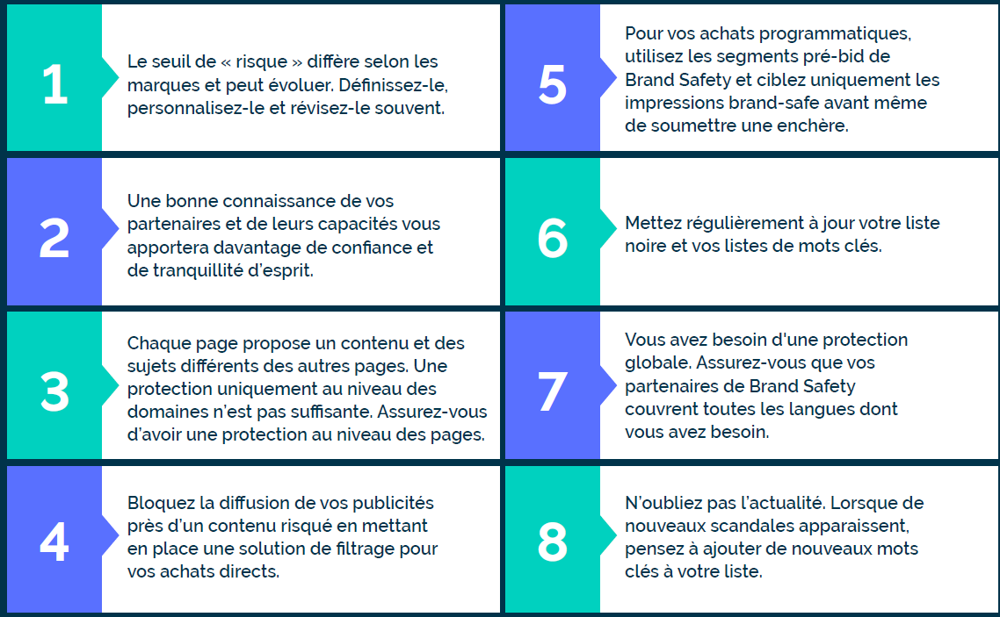
Certains serveurs sont équipés nativement d'une technologie de détection mais il est rare que cela soit suffisant pour avoir une mesure exhaustive. Certains DSP permettent
une option de pré-bid pour éviter d'avoir à enchérir sur des impressions qui seraient catégorisées comme étant frauduleuses. Un complément de mesure par un
enrichissement d'un tracking tiers (IAS ou MOAT) vous permettra d'avoir une plus fine appréhension du problème.
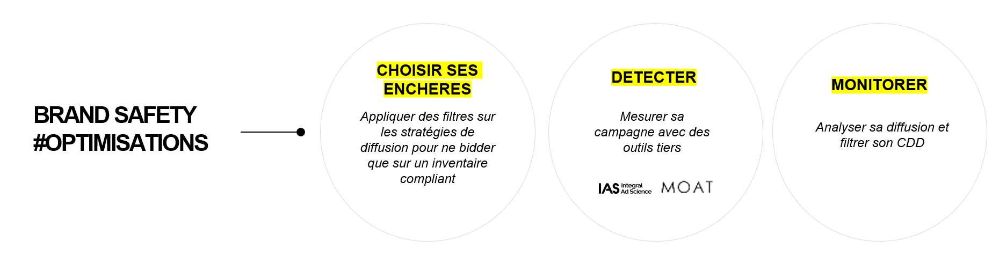
1. CHOISIR SES ENCHERES : Optimiser depuis les serveurs d'achat, les DSP
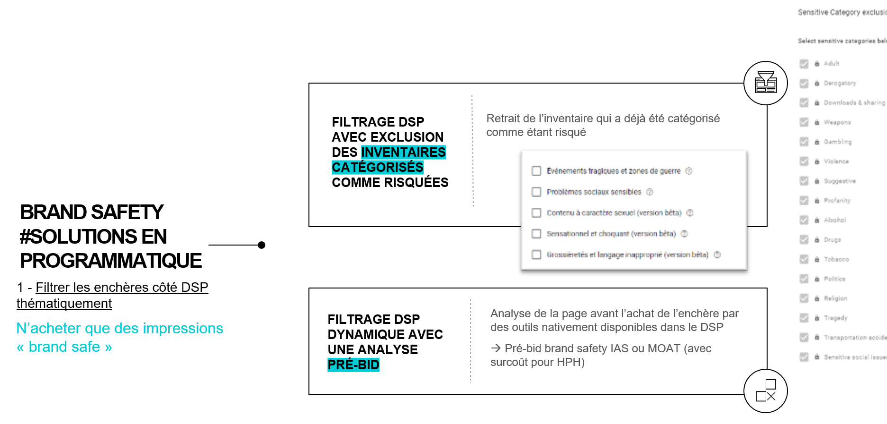
2. DETECTER : Extraire les données et savoir les comprendre
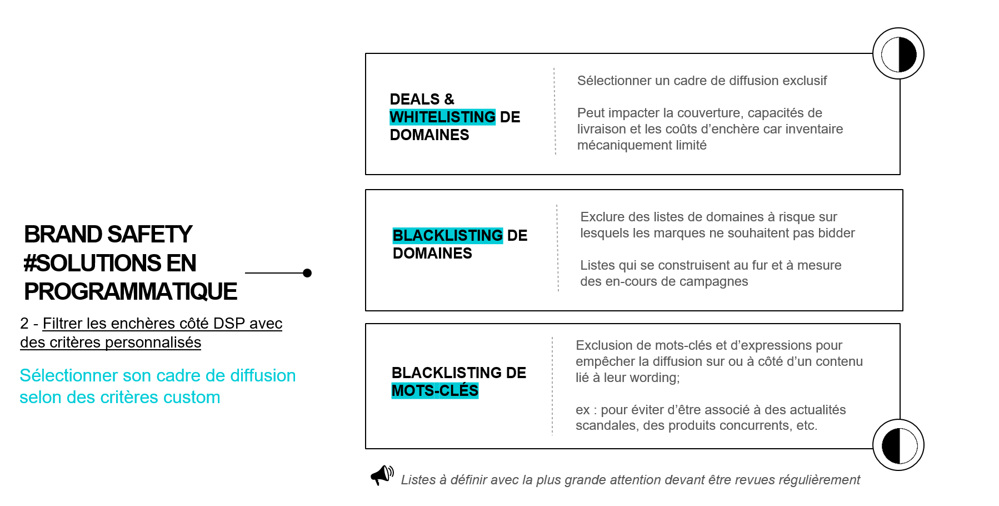
3. MONITORER : Analyser les performances et mettre en place des optimisations des cadres de diffusion
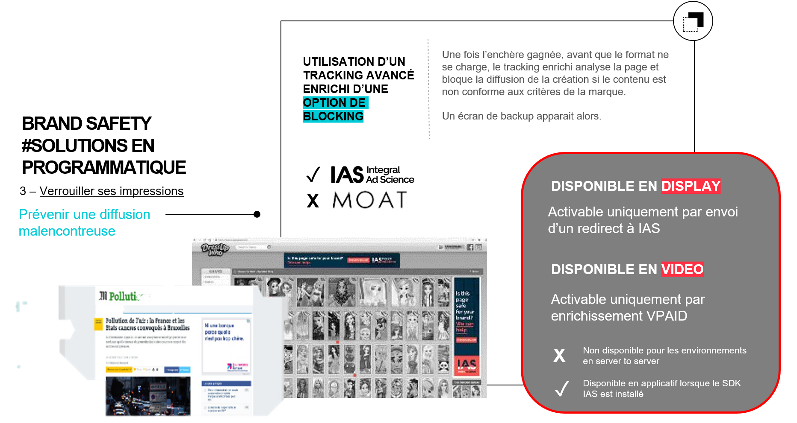
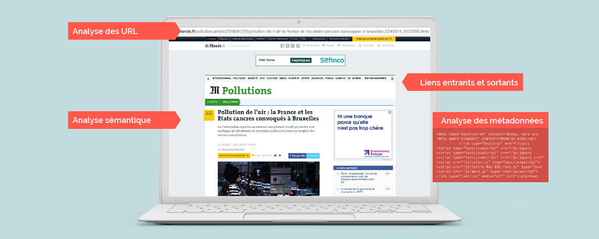
Une fois que l'environnement diffusion est sécurisé, il est important de s'assurer que les personas ciblées ne sont pas des robots.
CHALLENGE 2 : AD FRAUDE 🤖